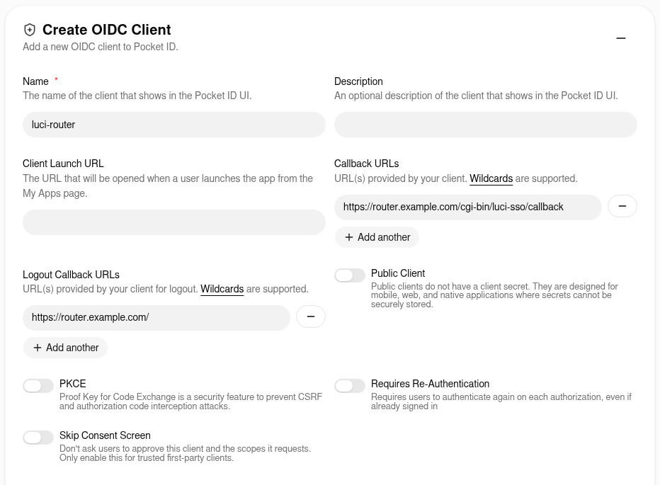
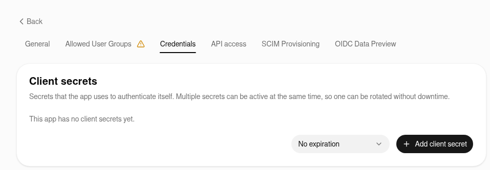
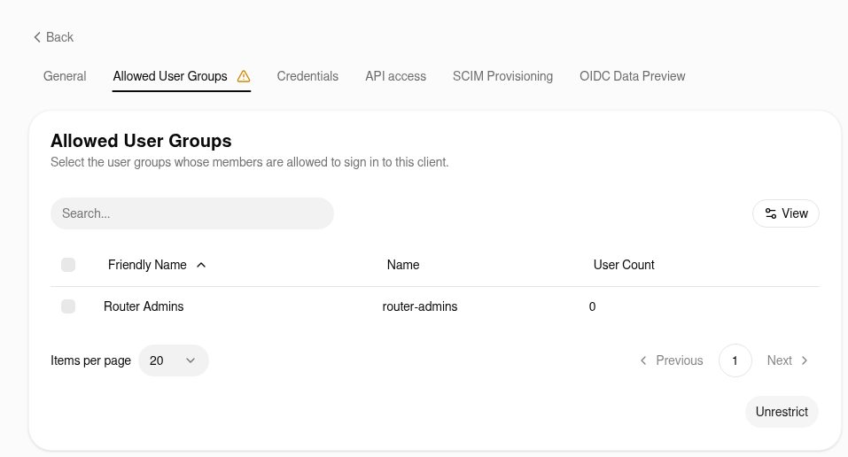
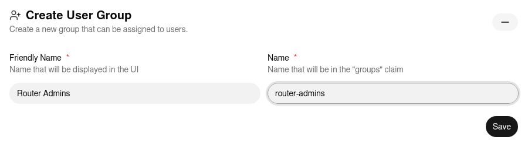

How to Configure Pocket ID¶
This guide describes how to connect luci-sso to a Pocket ID instance.
Pocket ID is a self-hosted OIDC provider built around passkeys — users authenticate with biometrics or hardware security keys instead of passwords. Users must have a passkey enrolled in Pocket ID before they can complete an SSO login on your router.
The steps and screenshots were checked against Pocket ID 2.16.0. Labels can differ in other releases.
1. Create an OIDC client in Pocket ID¶
Log in to Pocket ID as an administrator and open Administration > OIDC Clients. Click Add OIDC Client and fill in:
| Field | Value |
|---|---|
| Name | luci-router (or any label you prefer) |
| Callback URLs | Click Add, then enter https://<YOUR_ROUTER_IP_OR_DOMAIN>/cgi-bin/luci-sso/callback |
| Logout Callback URLs | Click Add, then enter https://<YOUR_ROUTER_IP_OR_DOMAIN>/ (where LuCI's Log out returns after ending the Pocket ID session) |
Leave Public Client off: luci-sso is a confidential client and authenticates with a client secret. Turning on PKCE is optional; luci-sso always sends a PKCE challenge.

Click Save. Pocket ID opens the client's page, which shows the Client ID. Copy it.
Pocket ID does not create a client secret on its own. Open the Credentials tab and click Add client secret. Copy the secret now: Pocket ID shows it in full only until you leave the page.

Open the Allowed User Groups tab and choose who may sign in. A new client allows no group, so every login fails with "You are not allowed to access this service." until you do one of the following:
- Tick the groups whose members may sign in, then click Save.
- Click Unrestrict to let every Pocket ID user sign in, and control access with the router's role mapping (Step 3) instead.

2. Configure the router¶
Navigate to Services > Single Sign-On.
Fill in the Settings section:
| Field | Value |
|---|---|
| Enable SSO | On |
| Issuer URL | https://id.example.com |
| Client ID | Your Client ID from Step 1 |
| Client Secret | Your Client Secret from Step 1 |
| Redirect URI | https://<YOUR_ROUTER_IP_OR_DOMAIN>/cgi-bin/luci-sso/callback |
Replace https://id.example.com with Pocket ID's APP_URL setting, exactly as set there and with no trailing slash. The Redirect URI must exactly match the callback URL set in Step 1. The field suggests one built from your browser's address; check it before you save.
Click Save & Apply.
uci set luci-sso.default.issuer_url='https://id.example.com'
uci set luci-sso.default.client_id='<YOUR_CLIENT_ID>'
uci set luci-sso.default.client_secret='<YOUR_CLIENT_SECRET>'
uci set luci-sso.default.redirect_uri='https://<YOUR_ROUTER_IP_OR_DOMAIN>/cgi-bin/luci-sso/callback'
uci set luci-sso.default.enabled='1'
uci commit luci-sso
Replace https://id.example.com with Pocket ID's APP_URL setting, exactly as set there and with no trailing slash. The redirect_uri must exactly match the callback URL set in Step 1.
3. Configure role mapping¶
A role says which users it matches, by email or by group. What the role may do on the router is its rpcd login entry. On a fresh install, the shipped admin role grants full access. To give some users less, add a role with its own Read Access and Write Access, as described in How to Configure Role-Based Access Control. A user gets the first role that matches, from the top.
Map by email¶
Navigate to Services > Single Sign-On and scroll to the Users section.
Click Edit in the admin row. In Email Addresses, replace the placeholder admin@example.com with the user's email address, then click Save in the editor.
Click Save & Apply.
uci -q del_list luci-sso.admin.email='admin@example.com'
uci add_list luci-sso.admin.email='user@example.com'
uci commit luci-sso
An email matches only if Pocket ID marks it as verified (email_verified: true). Pocket ID keeps a verified flag on each user, which is off for a user an administrator creates, so the login fails with [403] USER_NOT_AUTHORIZED unless a group matches. For each user you map by email, do one of the following:
- Open Administration > Users and edit the user. The envelope button next to Email is yellow while the address is unverified; click it (Mark as verified) so that it turns green, then save the user.
- To mark new addresses verified from the start, turn on Emails verified by default in Administration > Application Configuration, on the Email tab. It applies to addresses added or changed from then on, not to existing users.
- To have users confirm their address, turn on Email Verification on the same tab. Pocket ID then emails them a link, which needs an SMTP server.
Users synced from LDAP are always marked verified. Changing a user's email resets the flag to the Emails verified by default setting.
If you cannot mark the addresses verified, map by group instead, or turn the check off:
Navigate to Services > Single Sign-On, clear Require Verified Email, and click Save & Apply.
uci set luci-sso.default.require_email_verified='0'
uci commit luci-sso
With the check off, an email rule matches any address the IdP sends, verified or not. Do this only if users cannot set their own address at Pocket ID; see About Roles and Permissions.
Map by group¶
Pocket ID sends a user's groups in the groups claim of the ID Token when the groups scope is requested. Each value is the group's Name, exactly as set in Administration > User Groups, not its Friendly Name. When you type a Friendly Name such as Router Admins, Pocket ID fills in router_admins as the Name, so check the Name before you use it in a role.

Navigate to Services > Single Sign-On.
In Settings, update Scopes to openid profile email groups and click Save & Apply.
Scroll to Users and click Edit in the admin row. In Groups, enter the group's Name (for example router-admins), then click Save in the editor.
Click Save & Apply.
uci set luci-sso.default.scope='openid profile email groups'
uci add_list luci-sso.admin.group='router-admins'
uci commit luci-sso
4. Verify¶
Check that the service is active. On the router:
uclient-fetch -q -O - --no-check-certificate 'https://127.0.0.1/cgi-bin/luci-sso?action=enabled'
# Expected: {"enabled": true}
{"enabled": false} means SSO is turned off. An HTTP 500 error instead of JSON means SSO is turned on but the configuration was rejected; the log line Configuration rejected: … before [500] CONFIG_ERROR names the option.
Open the LuCI login page at the host name used in the Redirect URI; the login fails with MISSING_HANDSHAKE_COOKIE if it starts at a different address. The Login with SSO button should appear. Clicking it opens Pocket ID's "Sign in to luci-router" page. Click Sign in and use your passkey. The first time, Pocket ID asks the user to approve the information the router requests (email, profile and, for group mapping, groups). It remembers the answer. To skip this approval, turn on Skip Consent Screen on the client.
Troubleshooting¶
Navigate to Status > System Log and filter for luci-sso.
logread -e luci-sso | tail -30
| Symptom | Likely cause |
|---|---|
| A message under Login with SSO says "The identity provider is not responding" | The browser cannot reach the IdP; the router has no error to log. Open https://id.example.com/.well-known/openid-configuration in the same browser, on the same device. See The SSO button says the identity provider is not responding. |
[502] OIDC_DISCOVERY_FAILED, preceded by DISCOVERY_ISSUER_MISMATCH: issuer_url is "…" but the discovery document declares "…" |
issuer_url must be the base URL of your Pocket ID instance (https://id.example.com), with no path and no trailing slash. It must use the host name Pocket ID is configured with, not an IP address or another alias. Pocket ID's issuer is its APP_URL setting; copy it exactly. |
[500] CONFIG_ERROR, preceded by Configuration rejected: <reason> |
A required option is missing or invalid; the reason names it. redirect_uri is mandatory and must use HTTPS means redirect_uri was never saved: set it with the uci set luci-sso.default.redirect_uri=… command from Step 2. |
[401] MISSING_HANDSHAKE_COOKIE |
The login started at a different host name than the one in the Redirect URI. Open LuCI at the Redirect URI's host and try again. |
[403] USER_NOT_AUTHORIZED, preceded by Ignoring the unverified email of user [sub_id: …] for role matching |
The user's email is not marked as verified in Pocket ID. Mark it as described in Map by email. |
[403] USER_NOT_AUTHORIZED, preceded by User [sub_id: …] matched no roles |
Authentication succeeded but no role matched. If using group mapping, check that Scopes includes groups and that the role uses the group's Name exactly as Pocket ID shows it; group matching is case-sensitive. |
[400] IDP_ERROR, preceded by IDP_ERROR: the IdP returned error=<error> (<description>) |
Pocket ID refused the authorization request and sent the reason back to the router. The line gives Pocket ID's reason. |
[502] TOKEN_EXCHANGE_FAILED, preceded by Token exchange HTTP 401 |
Pocket ID rejected the client secret. Check client_secret, or add a new secret on the client's Credentials tab if the old one expired or was deleted. |
[502] OIDC_DISCOVERY_FAILED, preceded by Discovery fetch failed for [id: …]: HTTP_REQUEST_FAILED (CERT_UNTRUSTED) |
The router does not trust Pocket ID's TLS certificate. See How to Install a Private CA Certificate. |
| Pocket ID shows "You are not allowed to access this service." | The client's Allowed User Groups does not include any of the user's groups. A new client allows no group at all. Add the user's group, or click Unrestrict. The router logs no OIDC callback received line. |
| Pocket ID shows "The redirect_uri '…' is not registered for this client." | The router's redirect_uri does not exactly match an entry in the client's Callback URLs. |
| The login stops at Pocket ID with "The passkey prompt was canceled or timed out" | The user has no passkey registered in Pocket ID on this device. The router logs no OIDC callback received line. |
For a full list of error codes, see the Log Messages Reference. For every check luci-sso makes of an identity provider, and the error each failure logs, see Provider Compatibility.